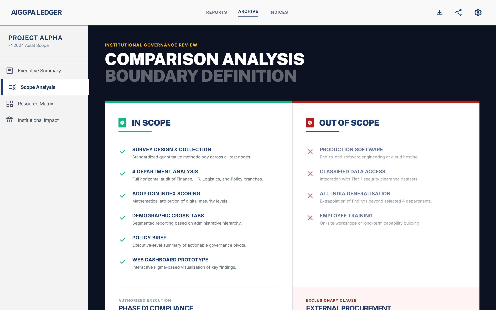
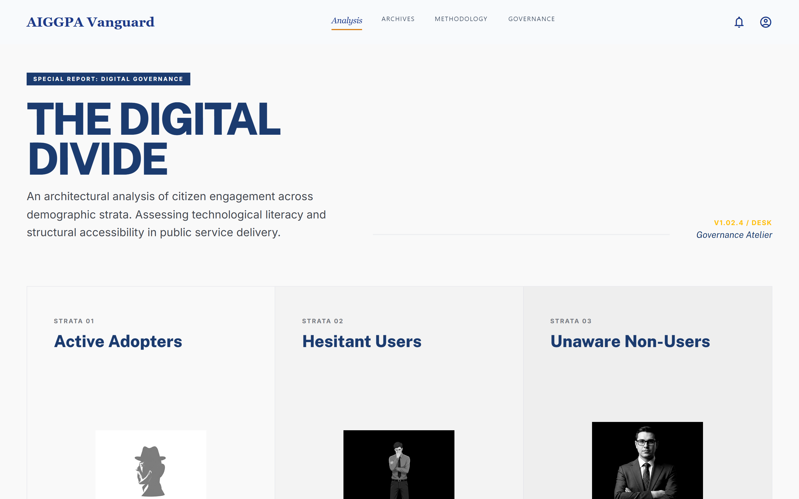
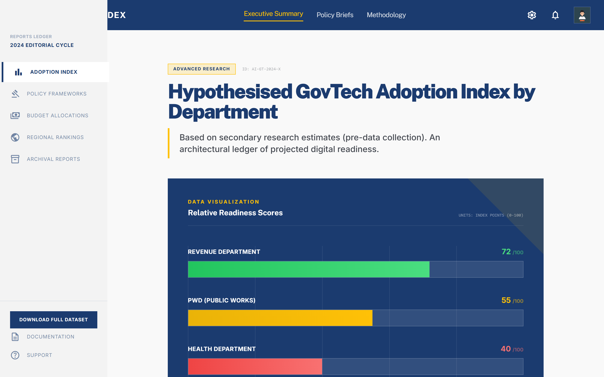
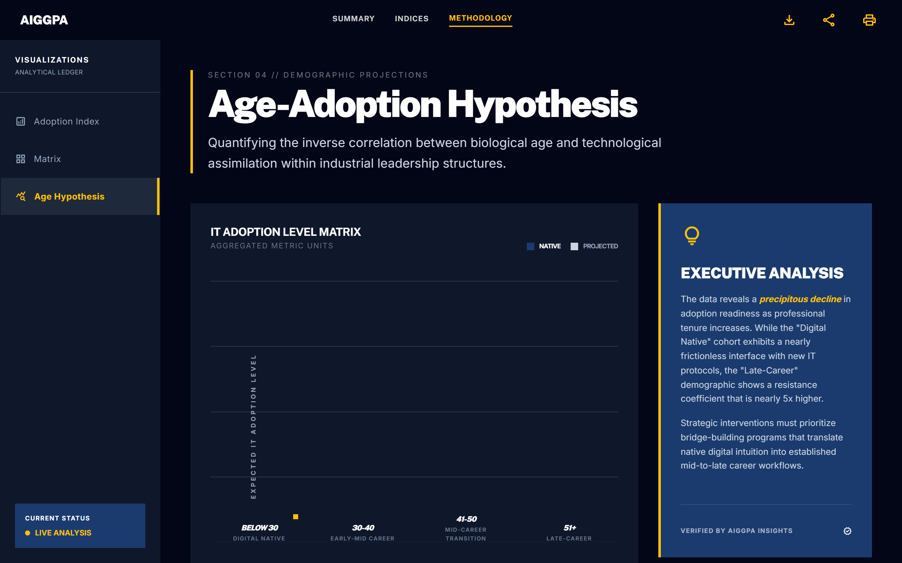
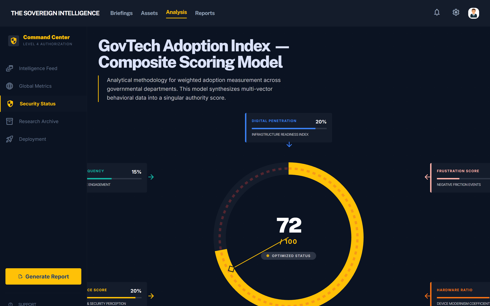
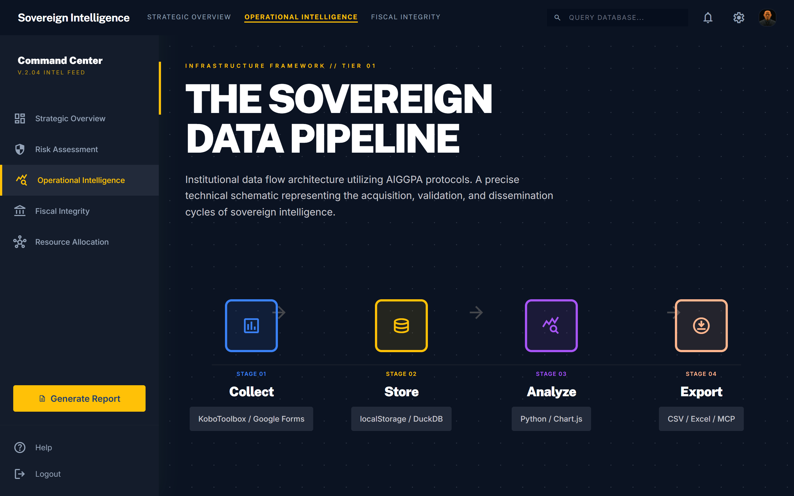
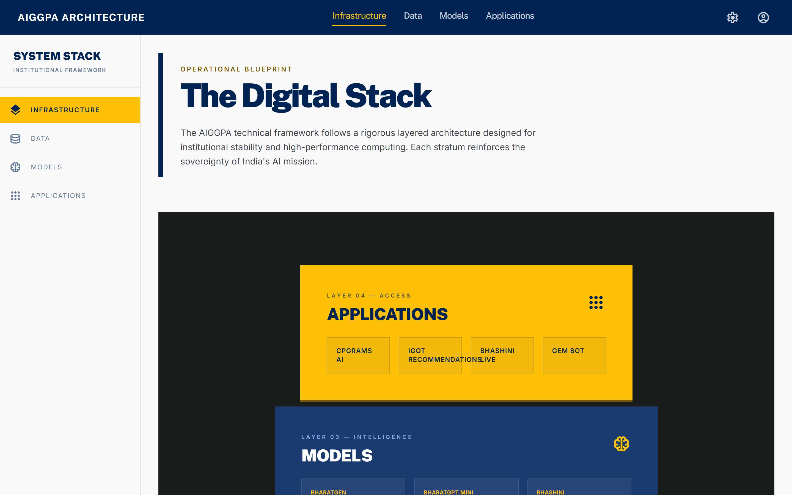
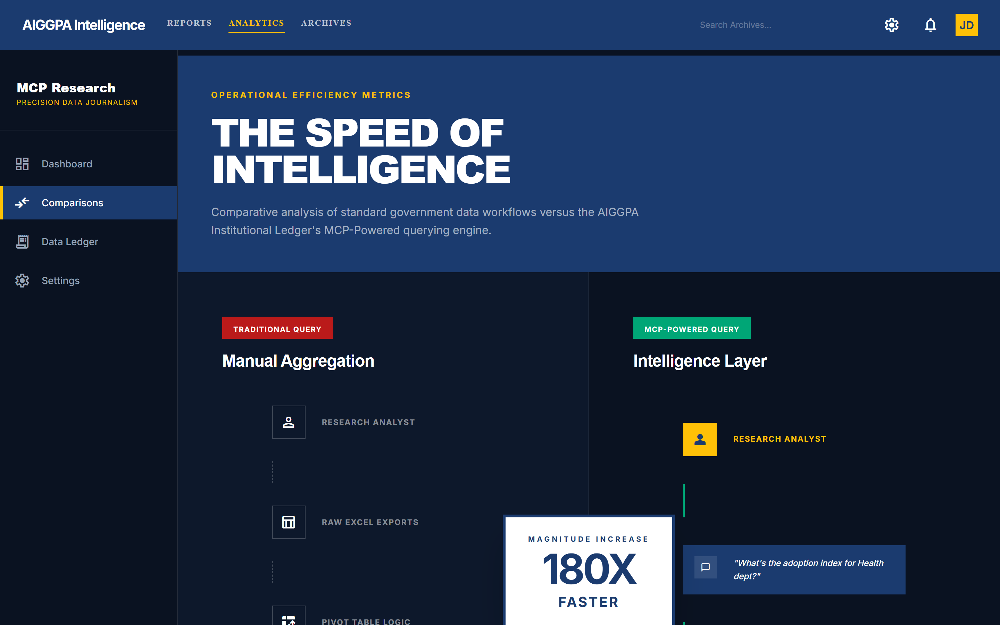
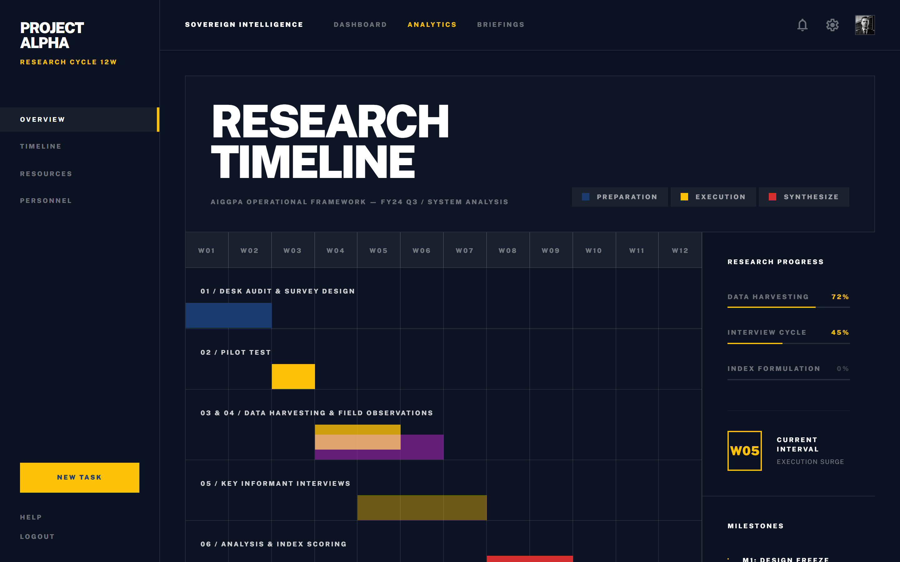

A data-driven methodology for measuring, interpreting, and solving the digital divide within state government departments.
Commence BriefingIT adoption in government has historically been measured by "features deployed" rather than actual "human usage." We established a strict boundary for Project Alpha to evaluate behavioral adoption across 4 core departments.





By surveying actual officials, we bypass bureaucratic assumptions. The data engine mathematically attributes an exact "Maturity Score" to otherwise invisible departmental friction.
Aggregates infrastructure readiness with actual human frustration indexes.
Proves that adoption resistance is driven by UX complexity, not user age.
To scale this insight engine state-wide, we require a secure, sovereign infrastructure capable of ingesting raw survey analytics and synthesizing action matrices.


Institutional deployments fail without speed. By equipping managers with MCP-powered (Model Context Protocol) analysis, diagnostic time plummets from 15 minutes to 5 seconds.
"Project Alpha is structured as a controlled 12-week sprint ensuring complete methodological freeze before executive delivery."


The technical framework is validated and the visual thesis is complete. Pending Executive Committee sign-off, data ingestion initiates immediately.